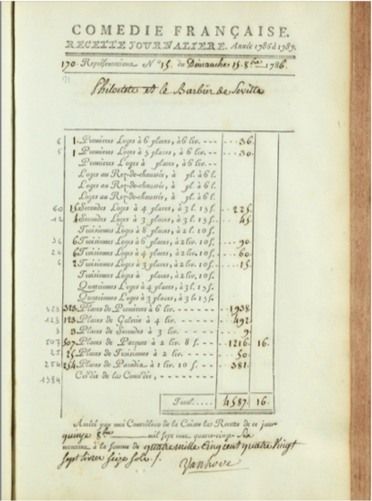

Le 14 et 15 octobre 2014 se réunissait un groupe international et éclectique – à dessein – composé de chercheurs représentant différents champs des humanités, de théoriciens ou encore de comédiens pour explorer les possibilités offertes par la base de données du CFRP. C’est ainsi que je me vis proposer de présenter la soirée du dimanche 15 octobre 1786. Le parti-pris était de prendre comme point de départ l’outil informatique développé par Hyperstudio.
La page du registre correspondant à cette soirée fournit d’emblée plusieurs indications : entre autre chose, elle nous apprend quelles pièces furent jouées cette soirée-là (Philoctète de La Harpe suivi du Barbier de Séville de Beaumarchais) et indique les recettes pour la soirée décomposées par catégories de places. Qui a tant soit peu l’habitude de parcourir ces registres ne peut manquer de remarquer le total particulièrement élevé des recettes, suggérant un succès singulier de la soirée. (Registre de la saison 1786-1787 ) De ce premier constat découle une série de questions : la réussite de la soirée peut-elle être confirmée par la base de données ? Si oui, pour quelles raisons les spectateurs se pressent-ils à l’Odéon ce soir-là ? Sont-ils attirés par la tragédie, traditionnellement la grande pièce, ou par la comédie d’un auteur au succès retentissant ?
